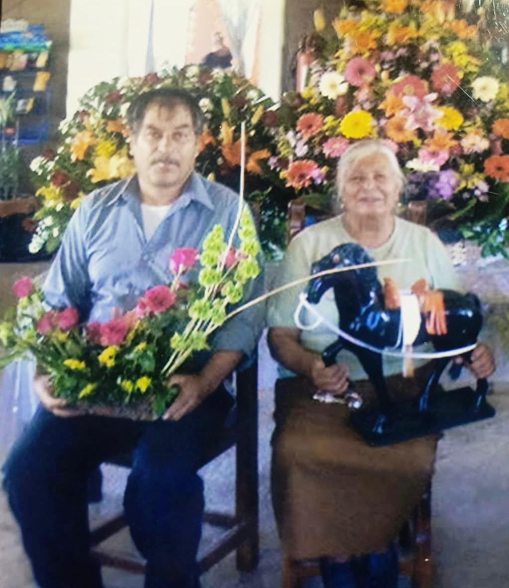
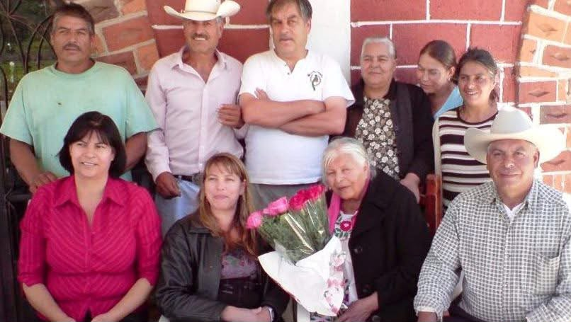
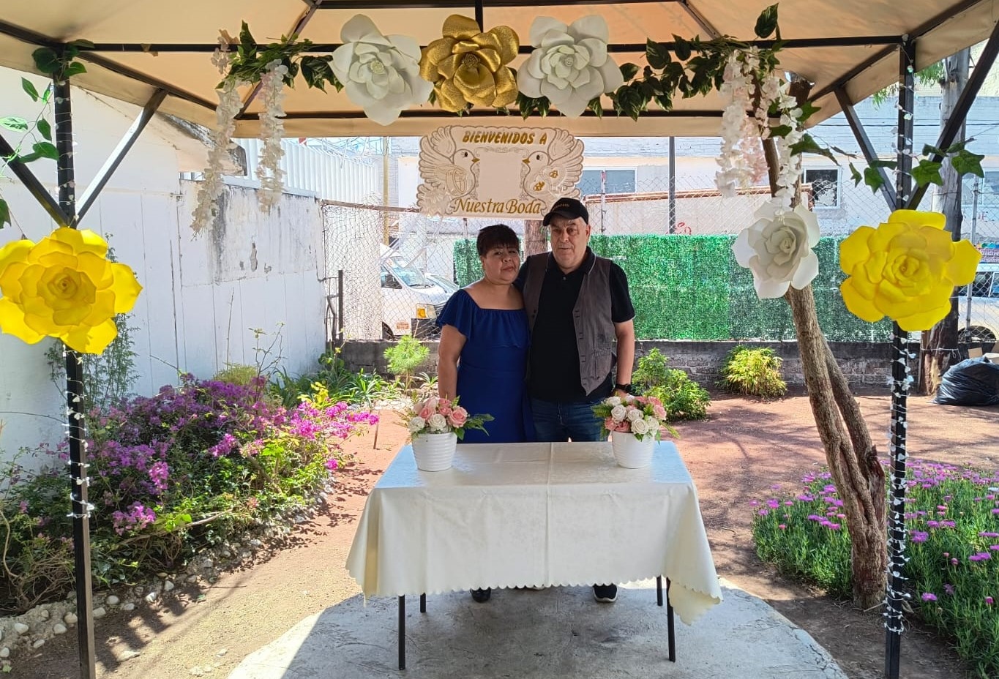
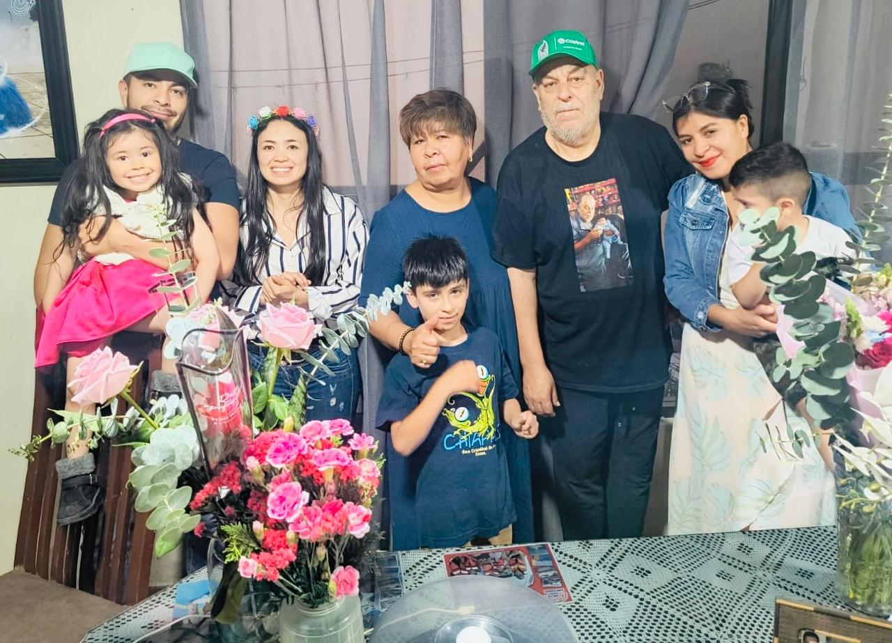
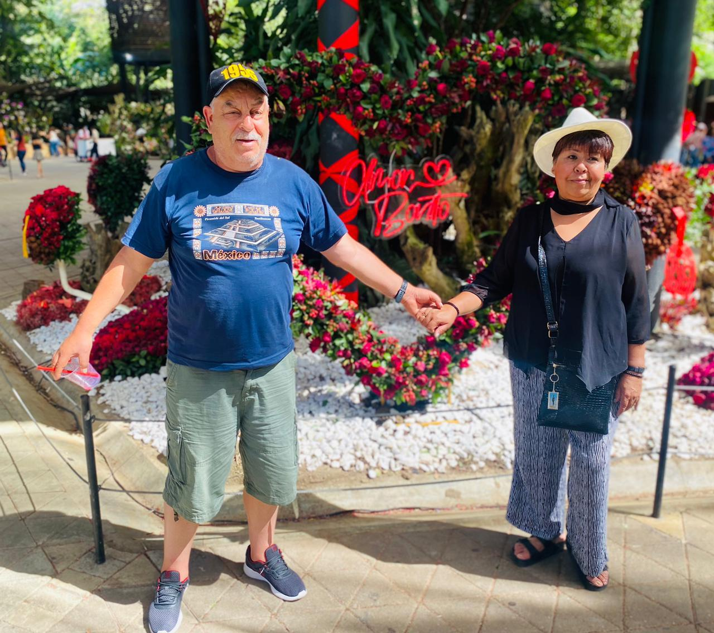
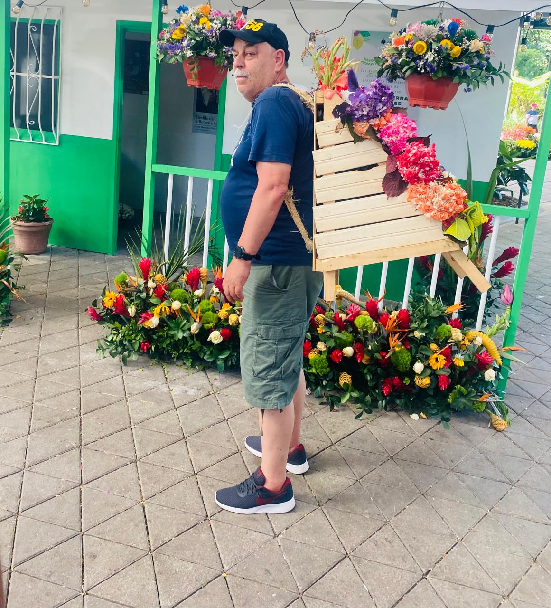
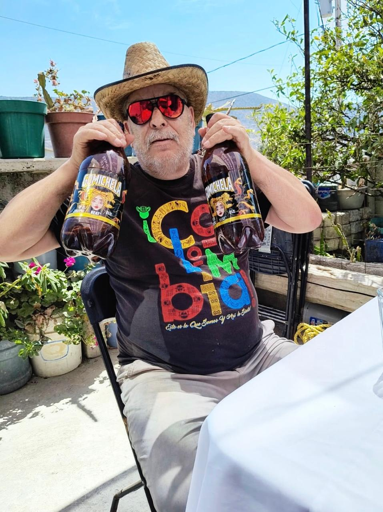

1956
Nacieron todas las flores.
UNA VIDA PARA CELEBRAR
70
Una historia de amor, familia, recuerdos y gratitud. Nos dará mucha alegría compartir contigo este día tan especial.
17 · OCTUBRE · 2026

SUS RAÍCES
La familia, el amor y las enseñanzas de quienes estuvieron al inicio de su historia siguen presentes en cada etapa de su vida.


Las raíces nos recuerdan de dónde venimos y el amor que nos acompaña siempre.
MI FAMILIA
Mi familia ha sido la mayor bendición de mi vida. Compartir cada etapa con ellos ha dado sentido a este camino y hoy celebro rodeado de quienes más amo.




Los amo con todo mi corazón.
UNA VIDA, MUCHAS HISTORIAS
Nacieron todas las flores.
Mayoría de edad, primeros amores, música de The Beatles y José José.
Mundial de México 86. Una década de esfuerzo y familia.
Boda por la iglesia.
¡Medio siglo! Fiesta en grande y jubilación.
Nace su primer nieto.
7 décadas · miles de historias · 3 generaciones
Cada etapa, cada experiencia y cada recuerdo han dejado huella en el camino.


Desliza para recorrer los recuerdos
LA CELEBRACIÓN
17 · OCTUBRE · 2026
Parroquia de San Antonio de Padua
Calle 9 y Avenida 6, Las Águilas
Ciudad Nezahualcóyotl
4:00 P. M.
Salón Jessy
Agustín de Iturbide 41 y 43, Loma Bonita
Ciudad Nezahualcóyotl
6:00 P. M.
CÓDIGO DE VESTIMENTA
Un estilo cómodo, cuidado y elegante para compartir esta ocasión especial.
Tu presencia hará aún más especial esta celebración. Por favor confirma tu asistencia.
CONFIRMO MI ASISTENCIA